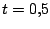
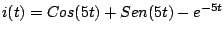
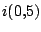
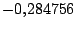
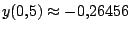
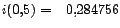
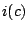
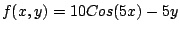
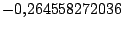

|
|
|
|
|Instituto Tecnológico de Costa Rica|Escuela de Matemática| M. Sc. Geovanni Figueroa M. |
|
|
Solución numérica
Para facilitar el trabajo y evitar la tarea de programación del método, podemos usar una hoja de cálculo como Microsoft Excel (en Windows) o Gnumeric (en Linux). Veamos el siguiente ejemplo
Ejemplo
Una resistencia de 5 y un inductor de 1 Henrio se conectan en serie con un generador de voltios. Si la corriente es 0 en , ¿ calcule la la corriente en el instante  segundos ? Usando las ley de Kirchhoff modelamos la situación anterior con el siguiente problema de valor inicial
Fácilmente podemos comprobar que su solución general esta dada por , con lo cual  es aproximandamente igual a . Ahora vamos usar una hoja de cálculo y el método de Euler para aproximar la solución del problema de valor inicial anterior. Primero pongamonos de acuerdo con los contenidos de cada columna
Ahora coloquemos los valores iniciales en la celda correspondiente
Una vez generados los valores para las columnas A y B podemos observar que  que es similar al valor real ya encontrado ( ) . En la figura 10 se muestra este proceso junto con una gráfica de la solución aproximada obtenida a partir de las columnas A y B y en el mismo sistema de coordenadas la gráfica de la solución exacta .
Figura 10
Usar una hoja de cálculo para aproximar la solución de una ecuación diferencial resulta sencillo, pero existen muchas otras opciones que podemos usar. El siguiente código muestra una función implementada para la TI92 que calcula el valor aproximado de  para el problema de valor inicial anterior (1.14)
euler(a,b,c,h) Func local x0, y0, While x0 < c y0 + h*f(x0,y0) -> y0 x0 + h -> x0 EndWhile Return y0 EndFunc Antes de usar la función Euler debemos definir la función ; y para ejecutarla escribimos en la ventana Home: euler(0,0,0.5,0.01). Al hacerlo obtenemos el valor  que está muy cerca de valor real. |